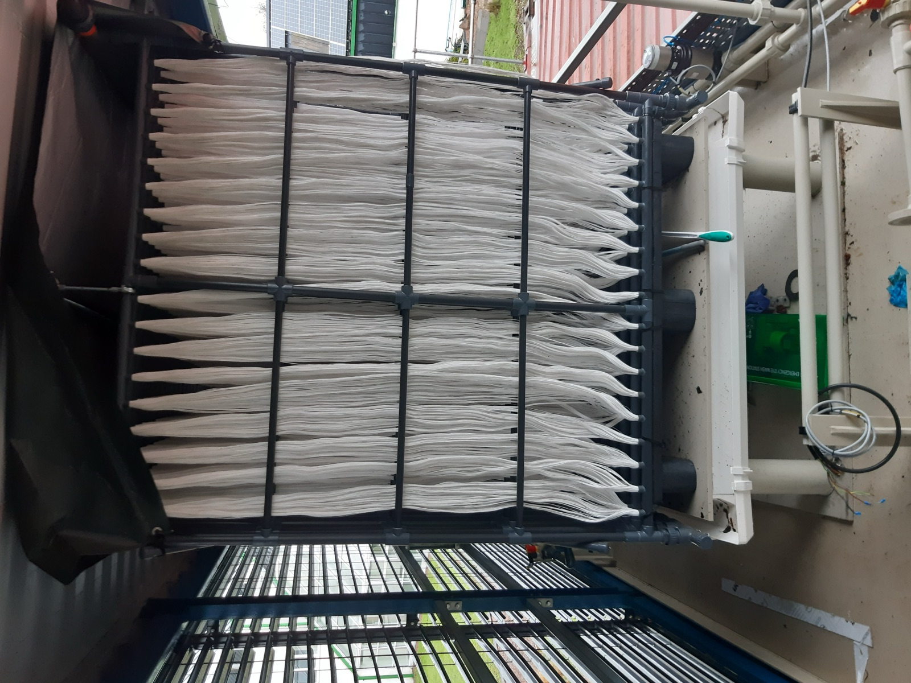
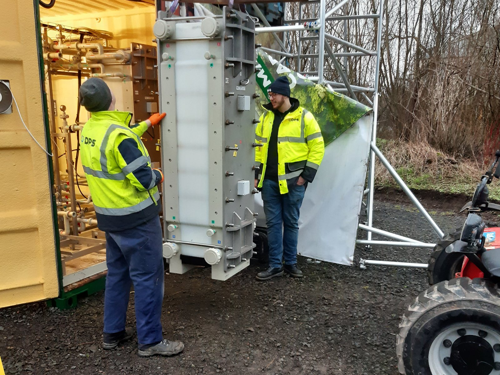
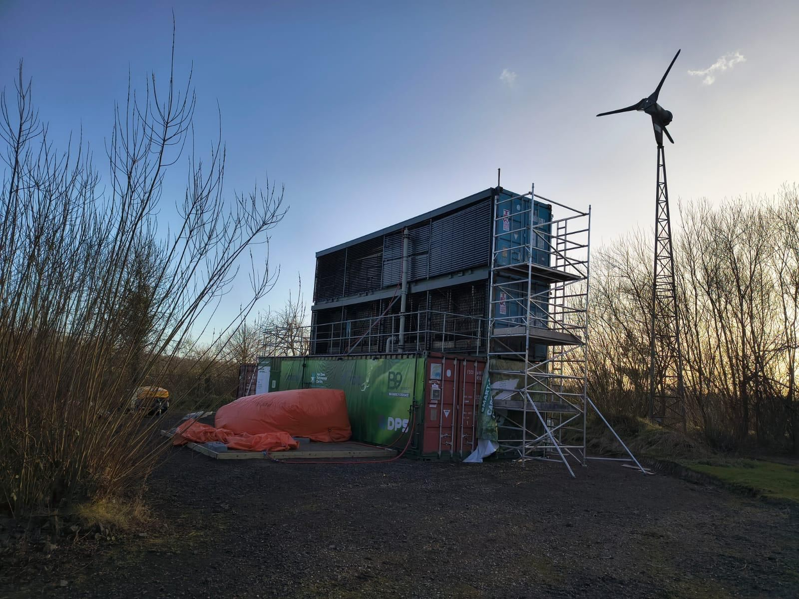
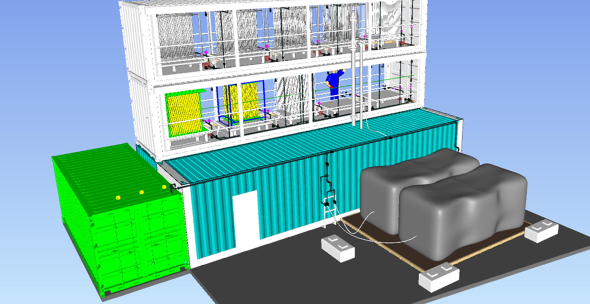
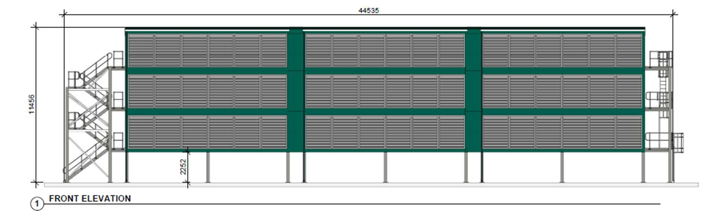

Two steps and a buffer.
Wind brings the CO2 from the atmosphere, electricity releases it.
Most direct air capture processes rely on adsorption: fans during capture, heat during release. SMART-DAC needs neither. The wind brings the CO2, which is dissolved in a water-based absorbent using membranes. Electrodialysis then releases the CO2 using only electricity. The CO2 is very pure, and the absorbent goes back to capture more.
- 2.0kWh per kg CO2 today
- 1.5kWh per kg CO2 in 2028
- < 0.2kWh per kg CO2 for the capture step, effectively a passive process
- 99.5%purity of the produced CO2
Capture: membrane gas absorption.
The capture unit is a standard container with louvres instead of side walls. The louvres keep direct sunlight off the membranes and let the air through. Inside hang hollow-fibre membrane modules. The water-based absorbent flows through the inside of the fibres, the air passes across the outside. CO2 moves through the fibre wall and dissolves in the liquid.
No fans. Only a small amount of electricity is used, for circulating the water: under 0.2 kWh per kilogram of CO2 captured, so the process is effectively passive.
The membranes are highly reliable. They survived Storm Darragh in December 2024, with winds above 70 miles per hour, without loss of performance or damage.

Release of CO2: membrane electrodialysis.
The CO2-loaded absorbent goes to an electrodialysis unit in a separate container, together with the controls and electrical equipment. There, electricity releases the CO2, and the absorbent returns to the capture unit.
This step takes most of the plant's electricity, about 1.5 kWh per kilogram of CO2 produced, and no heat is required. The unit can run around the clock and produce CO2, but preferably runs when electricity is available, cheap and green, or when CO2 is needed.

Buffer: capturing around the clock, produce on demand.
A set of tanks sits between the two steps. Capture never stops. Release can also be continuous, or scheduled around available renewable electricity and customer demand. The SMART buffer will support this flexibility and is designed to follow the customer's demand pattern. Process control is simple and runs on conductivity and pH.
For a wind park this turns a constraint into an asset. When the grid is congested, the turbines keep running at full output and deliver their electricity for producing pure CO2.

CO2 at 99.5 percent purity.
An advantage of SMART-DAC is that it delivers a continuous flow of 99.5 percent pure CO2, at a pressure slightly above atmospheric. Ready for direct use, or as feedstock for sustainable fuels such as e-methanol, e-SAF and other carbon-based products. The intermediate absorbent itself is a possible feedstock for electrochemical processes.
No fans, no heat, no chemicals to replace.
- No fans. The wind brings the CO2 to the membranes.
- No heat. Only electricity, so it pairs with wind and solar.
- No pressure, no compressors. Basically it resembles water treatment technology: pumps, membranes, electricity and standard plastic pipework. Switch it off, and nothing happens.
- No consumables. Only reverse osmosis water to compensate for evaporation.
- No special certification or supervision, because it is a simple water-based system.
- No waste. The absorbent is recycled continuously.
The result is a DAC system that is lower in cost, lower in energy and simpler to operate than other direct air capture systems.
Standard containerised equipment, standard components.
One 40-foot container captures around 200 tonnes of CO2 a year. Containers are stacked to suit the site and oriented to the prevailing wind. The installation is built from standard industrial components, is transportable, and can be placed close to where the CO2 is used. Capacity changes by adding or removing containers.


From 450 to under 150 euros per tonne.
| 2024 | 2026 | 2028 | After 2030 | |
|---|---|---|---|---|
| Cost per tonne of CO2 | €450 | €300 | €200 | < €150 |
| Electricity, kWh per kg | 2.5 | 2.0 | 1.5 | < 1.5 |
Basis: a plant of 10 kilotonnes per year, electricity at 50 euros per MWh, depreciation over 15 years. Civil works, grid connection and buildings are not included.
A dedicated development and engineering plan is in place to reach these targets.
SMART-DAC is patented.
European patent EP 4 477 292 A1 and international publication WO 2024/256349 A1, both published December 2024.
The patent covers the combination of membrane gas absorption and membrane electrodialysis for capturing CO2 from air.
SMART-DAC, a promising technology.
SMART-DAC captures and produces CO2 in an environmentally and economically sound way: on the road to under 1.5 kWh per kilogram and under 150 euros per tonne. The process leaves plenty of design freedom to match both the process and the demand. And the CO2 itself has clear advantages in use, in purity and in scalability. If you are interested in CO2 with all the environmental benefits direct air capture can offer, SMART-DAC is your solution.
The membrane technology is ready. What remains between Technology Readiness Level 6 and level 8 is process development and process design, not research. An installation can be built now.
The pilot results are on the home page. For a demonstration plant at your site, or green CO2 close to where you use it, email Berno Ram.